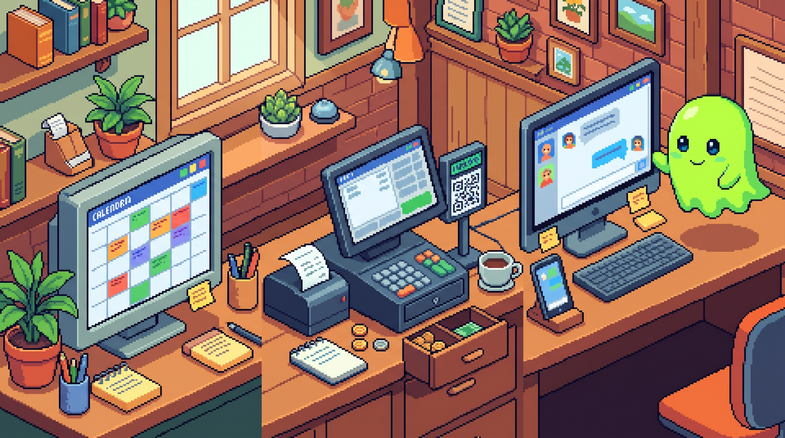

Três Ferramentas, Papéis Claros: Gaspar, Ink Agenda e CaraCore PDV
Na agenda nasce o tempo, cada ofício em seu lugar,
no balcão a venda segue, sem promessa a improvisar.
Um fantasma verde acompanha a rotina do operador,
e a mensagem, se pedida, cruza a ponte com cuidado e valor.
Cada sistema tem seu rumo, cada dado, proteção,
não se força um só caminho, nem se apaga a distinção.
Quando as peças servem bem, sem fingir fusão,
o ecossistema ganha forma na medida da operação.
O trabalho real não cabe em um único botão
Um pequeno negócio atravessa tarefas diferentes ao longo do dia. Alguém reserva horários, distribui atendimentos entre profissionais, recebe um pagamento, precisa cuidar de uma comunicação e, depois, conferir o que aconteceu. É tentador imaginar que a resposta seja reunir tudo numa tela só, como se a proximidade visual bastasse para tornar as rotinas mais simples.
Mas reunir não é necessariamente integrar. Quando responsabilidades distintas são comprimidas numa plataforma indiferenciada, o operador pode perder justamente aquilo de que precisa: saber quem faz cada ação, onde os dados ficam e o que acontece quando uma etapa falha. Uma arquitetura coerente começa por uma pergunta mais modesta: qual é o trabalho de cada ferramenta?
Ink Agenda: proteger o tempo de atendimento
Para quem trabalha com hora marcada, a agenda é parte da operação, não um enfeite de calendário. É ali que se organiza a disponibilidade, se distribui o trabalho e se evita que dois atendimentos ocupem o mesmo espaço. O Ink Agenda foi pensado para negócios de serviços como estúdios de tatuagem, consultórios odontológicos e espaços de beleza, com perfis e vocabulários adequados a cada contexto.
Quando há uma equipe, também importa separar as funções: quem agenda, quem atende e quem pode registrar determinadas informações não precisam ter exatamente a mesma visão. Essa distinção reduz confusão sem transformar o produto em um prontuário universal ou em um sistema de caixa. A agenda prepara o terreno para o atendimento; não precisa fingir que executa todas as etapas que vêm depois.
Na experiência desktop do Ink, os dados do negócio permanecem em uma base local. Essa escolha favorece autonomia e continuidade no próprio ambiente de trabalho, mas não elimina a responsabilidade de fazer cópias de segurança e proteger o computador. Software local não significa cuidado automático; significa que a custódia dos dados tem um endereço compreensível.
CaraCore PDV: registrar a venda com clareza
O ponto de venda entra em outra parte da jornada: o momento da transação. O caixa precisa registrar o que foi vendido, acompanhar o pagamento e deixar claro o resultado para quem opera. Quando uma integração externa participa, a interface deve explicar o estado em linguagem de balcão, sem transformar demora ou indisponibilidade em um falso “pago”.
Na composição definida para o CaraCore PDV v4.1.0, essa separação aparece entre os provedores: o Mercado Pago atende o fluxo de pagamento por PIX; o PlugNotas atende a emissão de NFC-e sob demanda. Pagamento e documento fiscal têm papéis diferentes. A nota não deve surgir como efeito invisível de fechar qualquer venda, e a venda não deve ficar refém de uma resposta externa que não chegou.
O princípio é simples, embora exija rigor: só tratar o pagamento como confirmado quando houver confirmação; quando o serviço externo falhar, informar o que ocorreu e qual é o próximo passo. Uma integração responsável não esconde a incerteza nem transfere para o operador a tarefa de adivinhar o estado da venda.
Gaspar: um rosto simpático e uma ponte delimitada
O Gaspar é o mascote verde-limão que flutua pela tela. Sua presença visual dá personalidade ao ambiente, mas o personagem não é a mesma coisa que os serviços que funcionam ao redor dele. Uma de suas funções práticas é a ponte local de SMS: um pedido pode ser encaminhado do computador para um celular Android pareado, que envia a mensagem pelo chip e devolve o estado do envio.
Essa ponte tem um limite importante. Ela não é um canal de pagamento, não emite documento fiscal e não conversa com as APIs do Mercado Pago ou do PlugNotas. O PDV pode encaminhar a ela um pedido de SMS assinado por uma integração específica; isso é uma passagem delimitada, não um fluxo geral entre os produtos. O texto, o pareamento do celular e as proteções do pedido pertencem à ponte. E essa possibilidade não significa que toda venda acione uma mensagem automaticamente.
Essa diferença entre mascote e mecanismo é saudável. A aparência pode ser acolhedora; o comportamento precisa continuar explícito. O operador deve conseguir entender quando o Gaspar está apenas na tela, quando a ponte está ativa e se a mensagem foi aceita pelo aparelho ou confirmada como entregue pela operadora.
- Ink Agenda organiza o tempo: horários, atendimentos e papéis da equipe.
- CaraCore PDV registra a venda: pagamento e emissão fiscal são etapas distintas, com estados claros.
- Gaspar acompanha e comunica: mascote de tela e ponte local de SMS, capaz de atender um pedido específico do PDV quando essa integração é feita.
Coerência não é acoplamento
Os três produtos podem compor uma visão coerente sem formar uma aplicação única. Essa distinção importa: não há motivo para presumir que a agenda do Ink cria vendas no PDV, que o PDV lê os horários do Ink ou que o Gaspar recebe automaticamente todos os eventos dos outros programas. A ponte de SMS é uma interação específica entre PDV e Gaspar; ela não equivale a uma base compartilhada nem conecta o caixa ao Mercado Pago ou ao PlugNotas por meio do mascote.
Há também diferenças de conectividade. O Ink e o PDV mantêm partes centrais da operação no computador local, enquanto o pagamento e a emissão fiscal podem depender dos serviços de seus provedores; a ponte do Gaspar usa a rede local para alcançar o celular. Portanto, “autonomia” não quer dizer que todo serviço funcione sem internet em qualquer circunstância. Quer dizer que cada dependência deve ser visível e que uma falha externa não deve ser disfarçada como sucesso.
Essa é uma forma mais útil de pensar um ecossistema: não como uma promessa de integração total, mas como um conjunto de ferramentas com limites reconhecíveis, dados tratados com cuidado e jornadas que explicam o que aconteceu. Quando uma ligação automática entre produtos fizer sentido, ela deverá nascer de um contrato explícito, de uma decisão de produto e de uma validação real — não apenas de uma ilustração bonita com três telas lado a lado.
O valor de cada ferramenta saber o que não é
Uma agenda não precisa virar um caixa. Um ponto de venda não precisa controlar toda a rotina do estúdio. Um mascote não precisa ser apresentado como inteligência que conhece cada movimento do operador. Ao preservar essas fronteiras, a Cara Core pode evoluir produtos diferentes sem vender uma ilusão de onisciência ou construir dependências que o negócio não pediu.
Da hora marcada ao pagamento, da tela à mensagem, a melhor tecnologia é aquela que ajuda sem tomar posse do trabalho. Três ferramentas, três responsabilidades; um mesmo compromisso com clareza, autonomia e respeito por quem mantém o negócio funcionando.
Hashtags
Contato e Links
- Gaspar: gaspar.caracore.com.br
- CaraCore PDV: pdv.caracore.com.br
- Ink Agenda: ink.caracore.com.br
- Empresa: Cara Core Informática
- E-mail: suporte@caracore.com.br
- LinkedIn: Cara Core Informática
Conheça as soluções Cara Core para organizar atendimentos, operar o caixa e apoiar a comunicação local.
Ink Agenda CaraCore PDV Gaspar
Artigo publicado em 17 de agosto de 2027
© 2027 Cara Core Informática. Todos os direitos reservados.